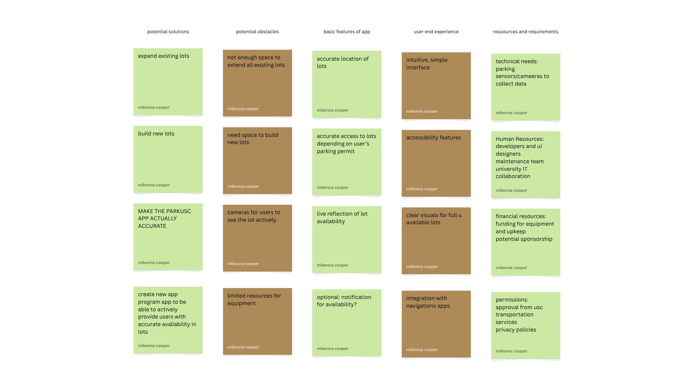
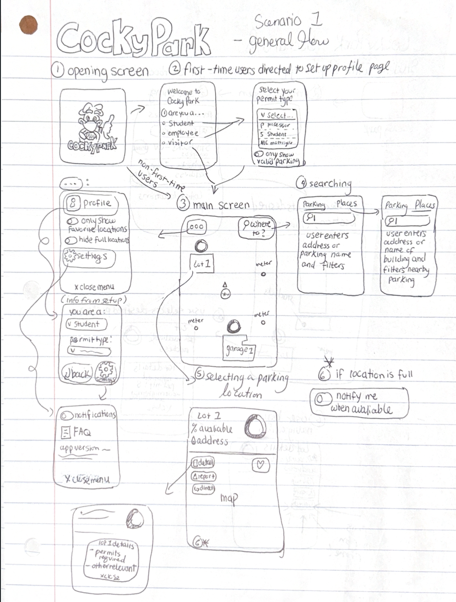
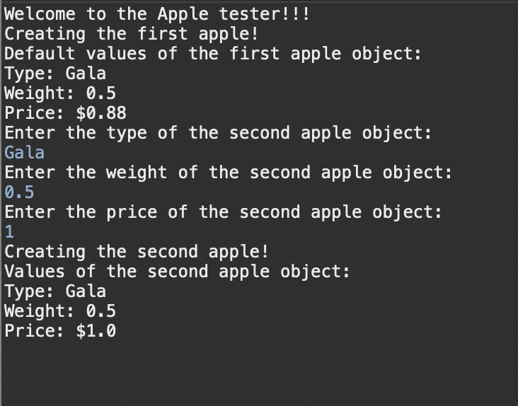

Highlighted Projects
Problem Statement

Students need a reliable and convenient way to park and move around campus because limited parking near residence halls makes it nearly impossible to leave without losing their spot.
Affinity Diagram
To resolve parking conflicts, the University could expand existing lots or build new ones, fix the existing app, or create a new app to provide accurate parking availability. Obstacles include funding, space, permissions, time, and human resources.
Sketches
A series of app designs with an intuitive user-interface for an on-campus parking navigation app.
Algorithmic Design Assignment
Program designed to create and test an Apple object.